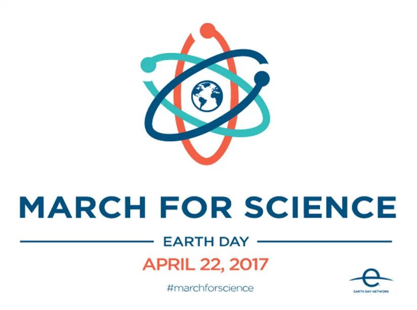

Il aura fallu 3,5 milliards d'années à la vie telle que nous la connaissons pour évoluer de l'organisme monocellulaire à la biosphère d'aujourd'hui, un incroyable système de près de 10 millions d'espèces qui convertit l'énergie de notre étoile et les éléments de notre planète en un instable et magnifique assemblage de structures en perpétuelle redéfinition.
L'un des éléments nouveaux de cette immense équation est l'Humain moderne, un animal apparu il y a 200 000 ans, dont l'intelligence collective consolide culture et outils, et les distribue au sein de l'espèce et à travers le temps, grâce à des moyens de plus en plus sophistiqués.
Il y a plus ou moins 3 000 ans, la culture la plus évolutive du règne animal a pris une extraordinaire accélération. Soudain, plutôt que de laisser à la Nature le soin de sélectionner les croyances les plus performantes du point de vue de la survie, l'Homme Moderne a réalisé qu'il pouvait être créateur de connaissance grâce à un processus incroyablement plus efficace et rapide : le raisonnement rationnel, appliqué à l'observation. La science était née.
Dans ce contexte, la clef d'une issue positive est une gouvernance intelligente, au bénéfice non seulement de notre espèce mais de la totalité de la biosphère. Cela ne peut se faire qu'en s'appuyant sur des modèles prédictifs de qualité.
La science est le meilleur outil auquel 3,5 milliards d'années d'évolution est arrivé.
Afin de comprendre notre monde et d'agir avec responsabilité, nous devons DÉFENDRE LA SCIENCE. Nous participons à la Marche pour la Science.